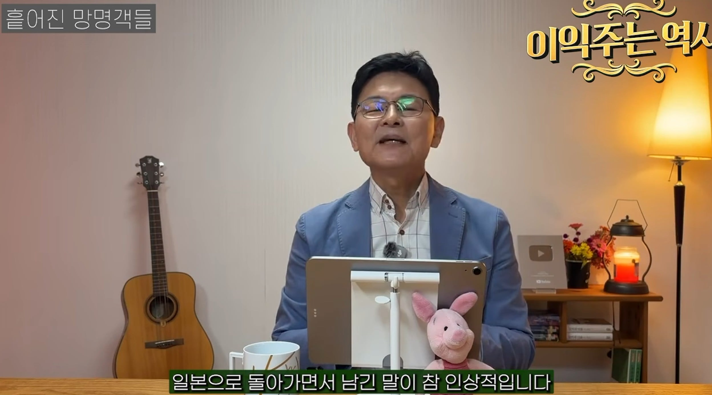
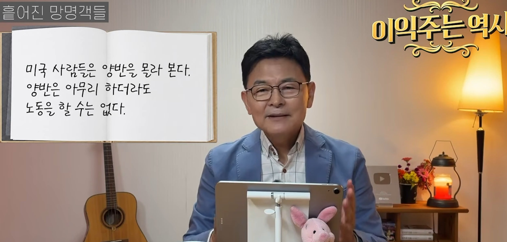
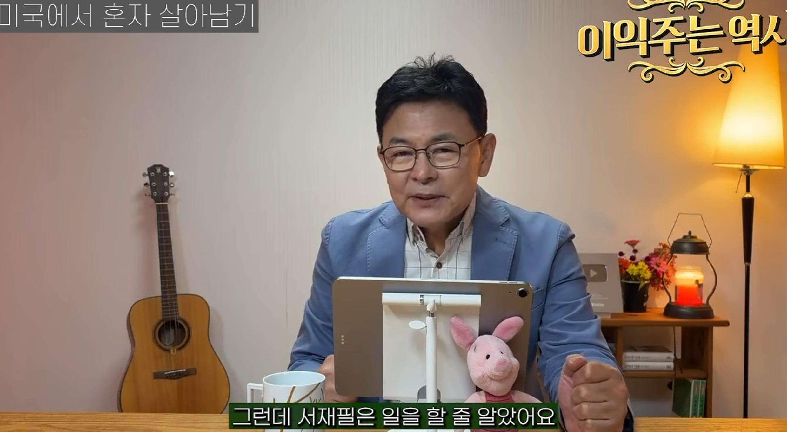
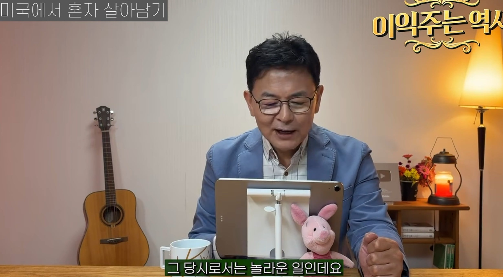
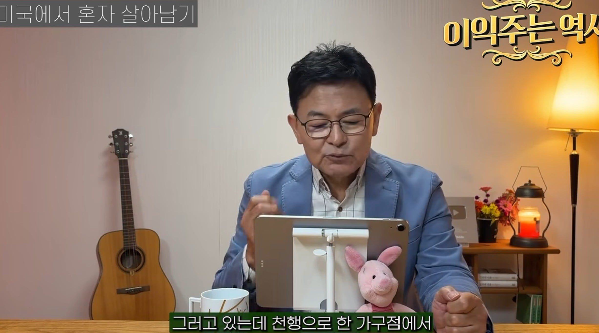
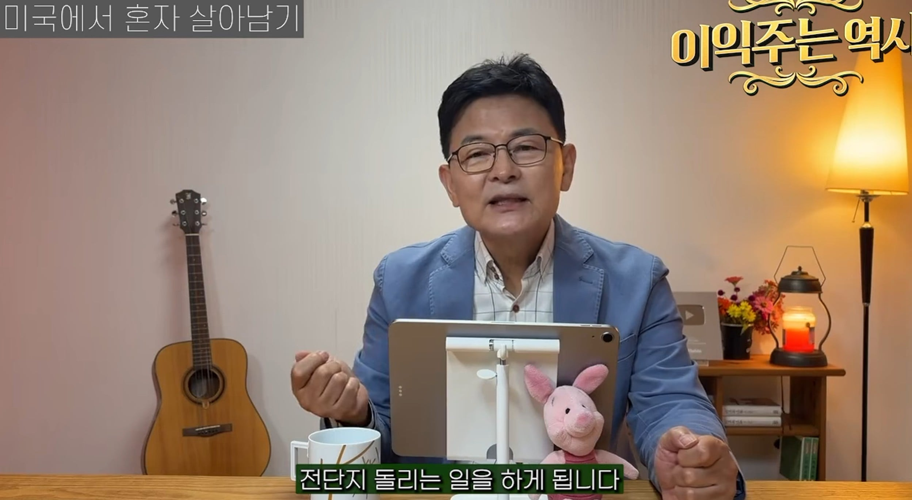

박영효 : 하 시발 양반인 내가 일을 해야겠냐? 일본으로 돌아가고 후에 네임드 친일파가 됨




서재필 안굶어 죽을려면 일해야하네
전단지 돌리는걸로 시작해서 미국 시민권따고 의사도 됨 그런데 병원 개업했는데 돈은 못벌었다고함 인종차별로 미국인들이 동양인 의사병원에 안왔다는듯


박영효 : 하 시발 양반인 내가 일을 해야겠냐? 일본으로 돌아가고 후에 네임드 친일파가 됨




서재필 안굶어 죽을려면 일해야하네
전단지 돌리는걸로 시작해서 미국 시민권따고 의사도 됨 그런데 병원 개업했는데 돈은 못벌었다고함 인종차별로 미국인들이 동양인 의사병원에 안왔다는듯
박영효는 철종의 유일한 사위라
일반적인 양반이랑은 격이 다르긴 했음.
왕의 딸이랑 결혼한 마지막 조선사람
자의식 과대 백수가 원종단 되는 건 그때도 그랬구나.
서재필선생님은 그냥 인자강같음
정신적으로도 본인가족 연좌제로 목숨잃었는데도 다시 조선들어와서 자문해주고
가족이 몰살당한건 사실 본인 업보가 아닌지..
박영효 병신새끼.. 근데 그 당시 조선에 병신이 아닌 새끼가 있긴했을까마는
독립운동한 분들은 다른나라 사람임?
아니면 독립운동도 병신짓이라 생각하는것임?
독립운동가 말고
나라 넘어갈때쯤의 수뇌부들 꼬라지가 대체로 병신같긴 함
그래서 역사공부할때 조선말, 근현대사가 하기 싫었음 독립운동 일어난다고 해도 어차피 망할거 스포당했고 대체로 전개가 개답답해서...
김홍집 같은 사람은 욕 먹으면서도 할 일 다 했는데 박영효 똥도 치우고
실제 저 상황에 처한다고 생각해봐라 95퍼는 박영효처럼 행동할 듯
전근대 국가의 기득권층으로 살다 와서 전단지 돌리고 밑바닥 생활에 적응한 서재필이 대단한거지
단순 기득권도 아니고 초엘리트 기득권임 ㅋㅋ 서울시장인 한성판윤도 했던 인물인데
해방 이후 대통령 출마 권유도 받았지만.. 확실한 대세를 가지고 있던 것도 아니고, 자신은 미국인이라는 이유로 거부..
1965년인가 64년에 미국민권법 제정돼고 흑인들 참정권이 생겨났음
노예로 끌려와서 미국에 정착한 흑인들도 노예제만 폐지됐을뿐 65년까지 각종 차별을 당해왔는데 흑인도 아닌 듣도보1지도 못한 다른인종이다?
사람 취급 안해주는 경우가 많았다고함
서재필 선생은 그런 미국에서 버틴거
양반말고 귀족이라고 했어야지
그래서 문방구 하셨자너
서재필센세 국결하심